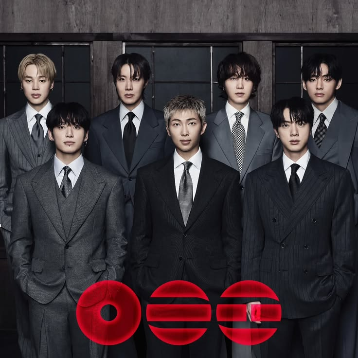
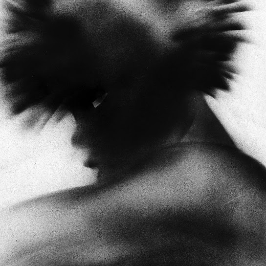

Стив Томас Лейси-Мойя — американский музыкант, певец, автор песен и продюсер. Впервые получил признание как участник номинированной на премию Грэмми соул группы The Internet в 2015 году. В 2017 году выпустил свой дебютный мини-альбом Steve Lacy's Demo.

BTS — южнокорейский бой-бэнд, сформированный в 2013 году компанией Big Hit Entertainment. Коллектив состоит из семи участников.

Ecco2k — британо-шведский певец, музыкальный продюсер, дизайнер, модель и режиссёр, член музыкального коллектива Drain Gang. Его настоящее имя — Зак Арогундаде Гатерууд.